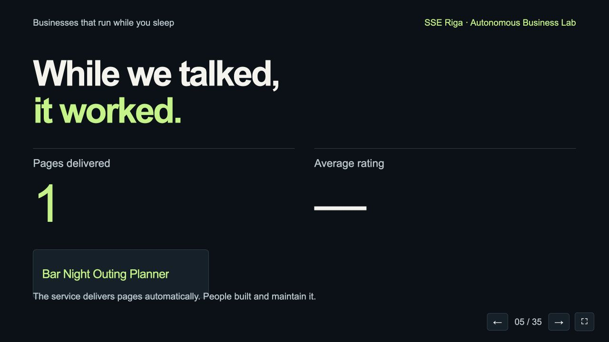

You are
the customers.
1. Scan.
2. Type one skill or problem.
3. Open, rate and keep your page.
Keep one weakness in mind. We’ll use your page again.

Jeff Burton.
Co-founder of Electronic Arts
- When did you know EA's customers really wanted what you built?
- What did you never delegate as a founder?
- Here are the first startups the machine made from this room. Pick one. Is it a business? What is missing?
- If you were 21 and in this room today, what would you learn and build?
While we talked,
it worked.
Pages delivered in class—
Classroom rating—
Recorded classroom demonstration. Live room counters and student submissions are not included.
The service delivers pages automatically. People built and maintain it.
08 / 18 · FIVE LOOPS · 4 / 5 Local Codex · creative agent
The Unfinished Atlas
 Recorded local run.
Recorded local run.Each tile extends the same map.149tiles · recorded 11–12 OctView the public example ↗
REMEMBERS Coordinates + neighbouring tiles
015-min attempt→02Read neighbours→03Draw→04Inspect→05Save / upload↻
Needs the Mac awake and Codex connected. Failed checks add no tile.
17 / 18 · WORKSHOP EXERCISE · RECORDED CONTEXT
Your turn: send your ideas.
In class: seven minutes to send ideas. Then read the Top 3 and ask what makes number 1 good.
Browse the workshop ideas →This copy does not connect to live intake, scoring or the projector board.